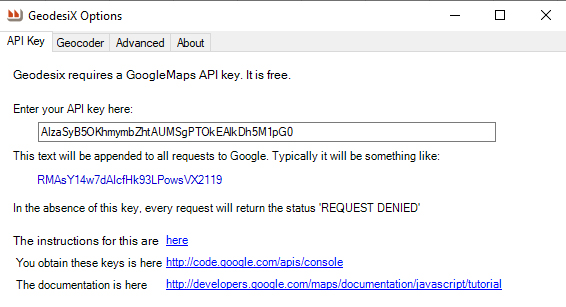
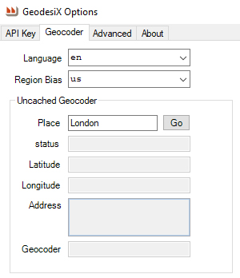
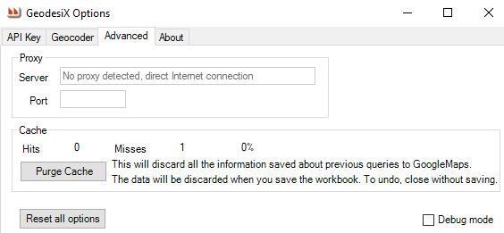

The Options dialog is used to set advanced options.
API Key Tab
Used to supply the Google Maps API key, which is free. Geodesix requires this to get geographical information from Google. Instructions
Geocoder Tab
Used to debug Region and Language problems with the Geocoder.
Advanced Tab
Used to debug problems with the proxy setup.
Cache statistics. When Geodesix retrieves information from Google, the data is cached and slyly saved inside the workbook. Purge Cache empties this cache (and all data will be re-requested).
Reset All Options. Revert all options to the installation defaults. This does not change drawing settings, which are specific to each workbook.
Debug mode. Play with this at your own risk.
Switches on debug logging, which enables debugging tools on the ribbon and
writes reams of trace information to